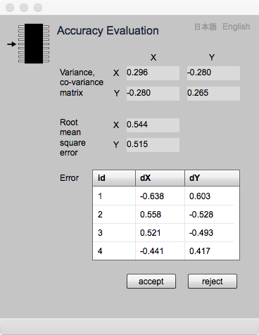

Accuracy Evaluation
標定正確度の評価
ここでは，図面標定及び標定の品質評価について解説し，次に，このページの見方を説明し，最後に操作法の説明をします．
図面標定 (Map Orientation)
地球は球体に近い形をしているので，地表は湾曲しています．しかし，誤差が無視できる狭い範囲であれば，平面と見なすことができます．そして，スクリーン上に表示された地図座標とそのような範囲内の地上平面座標の関係は，平面座標同士の関係なので，一次変換式（gittok ではアフィン変換を使います）で求めることができます．
この変換式の未定係数を求めることを，ここでは図面標定とか地図標定と呼びます．未定係数の数は6なので，平面座標の対が３組あれば，方程式を解くことができます．しかし，地図座標のデジタイズを失敗したり，逆に地上平面座標の値を間違って与えても，ミスを発見することができません．そこで，３点以上の点を与えて最小二乗法で，未定係数を求め，同時に分散共分散マトリクスを求めて，そこから平均二乗誤差や，コントロールポイントにおける誤差を導いて，標定の正確度評価を行います．
ここで正確度 (accuracy) とは，真値または真値と見なされる値と計測値の間のずれの量のことです．図面標定の場合は，計測値は，スクリーンに表示されたコントロールポイントの地図座標です．一方，真値と見なす値は対応する地上平面座標です．従って正確度は，求められた未定係数を使ってスクリーン座標を地上平面座標に換算し，その値とあらかじめ与えられた地上平面座標のずれということになります．しかし，それは与えられた点数分だけ値がでてきますので，一般には，それを指標化した平均二乗誤差をもって，正確度とします．ただし，この説明は，計測されたスクリーン座標のx座標とy座標の誤差が何らかの関係（例えばX座標の誤差が大きいときは，y座標の誤差も大きくなるなど）が存在しない，言い換えれば相互に独立なときに成り立ちます．その独立性は共分散を見れば分かります．共分散の値が分散の値と比較して充分小さければ，独立と考えてよいのです．Accuracy Evaluation ページはこれらのことが，一目で分かるページです．
Accuracy evaluation page

図1. 正確度評価のためのページ
Fields
Variance co-variance matix
このマトリクスは分散と共分散を示しています．ここではX座標の分散は 0.237 ，Y座標の分散は0.001 です．共分散は0.004です．たまたまY方向の分散は小さい値を示していますが，X方向の分散に対しては共分散は充分小さい値をとっていますので，x座標とy座標の計測値は互いに独立と考えても差し支えないでしょう．
Root mean squere error: rmse
X座標とY座標の平均二乗誤差です．分散の平方根がrmse になり，地上平面座標と同じ計量単位をもちます．この例の場合は，X方向は0.487 m, Y方向は 0.008 m です．
Error
この表は，コントロールポイントそれぞれの誤差です．誤差の平均値は0になります．上記の表では小数点以下３桁までしか表示されていませんので，X座標の誤差の平均値は０にはなりませんが，桁数を増やせばほとんど０になります．
Buttons
accept
上記の指標をみて，問題なしとする場合は，このボタンを押します．すると，アフィン変換式の係数や正確度評価のために指標が記憶され，幾何属性のデジタイズが可能になります．
reject
上記の結果を見て，問題がある場合は，このボタンを押します．すると，再度標定を行うことができます．ただし，すでに計測した幾何プリミティブの座標を変更することはできませんので，これをしたときは，すでにデジタイズした幾何データを消去して，再度，始めからデジタイズしなければいけません．
日本語
今あなたが読んでいるドキュメントが表示されます．
English
You can read the tutorial written in English.